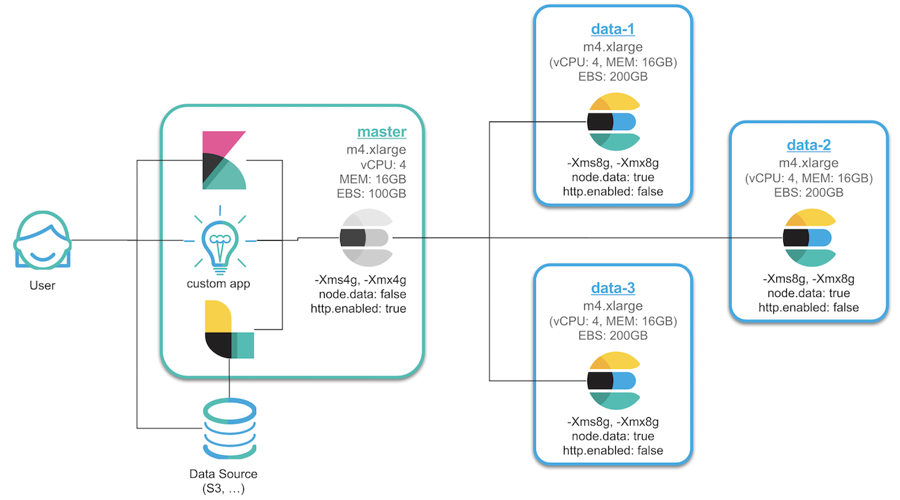

이번에 필요에 의해 새로 Elastic Stack 클러스터를 구성하게 되었습니다. 구성 방법에 대해서는 여러 레퍼런스가 있지만, 처음부터 다시 한번 쭉 정리 할 생각으로 블로그 포스트에 시리즈로 작성하려고 합니다.
1. 서버 생성 및 Elasticsearch RPM 설치
2. 메모리, 네트워크 설정 및 플러그인 설치
3. 클러스터 구성 및 마스터, 데이터 노드 설정
4. Kibana 설치 및 X-Pack Monitoring 확인
5. NFS 구성 및 elasticsearch 추가 설정
6. X-Pack Security를 이용한 SSL 및 TLS 설정
7. X-Pack License 적용 및 사용자 생성
8. Logstash 설치 및 Elasticsearch 기본 템플릿 설정
구성은 최대한 실제 서비스 되는 구성에 가깝게 설치 해 볼 예정입니다. 개략적인 컨셉 아키텍쳐는 다음과 같습니다.

- 3개의 데이터 전용 노드, 1개의 마스터 전용 노드로 구성합니다.
- Master Node가 설치된 서버에는 Kibana, Logstash 및 기타 프로그램들을 같이 설치합니다.
- 마스터 노드만 HTTP REST API를 열고, Data Node 들은 Transport 통신만을 합니다.
- Kibana, Logstash 및 기타 프로그램은 Master Node 와 REST로 통신합니다.
- 데이터는 Master Node 를 통해서만 색인됩니다.
서버 생성
AWS 에서 EC2 인스턴스를 생성하도록 합니다. 인스턴스 생성은 AWS EC2 콘솔에서 그냥 실행하면서 넘어가면 되기 때문에 과정을 따로 설명하진 않겠습니다. 제가 구성한 환경은 아래와 같습니다.
- m4.xlarge: 4 vCPU / 16GB
- OS: Amazon Linux AMI 2017.09.1
- EBS: 200GB
시간대 설정
서버의 초기 시간 설정이 UTP로 되어 있는데, 대한민국 서울 시간으로 변경 해 줍니다.sudo cp -p /usr/share/zoneinfo/Asia/Seoul /etc/localtime
Java 업그레이드
Elasticsearch 를 지원하는 Java 버전은 Support Matrix 페이지에서 확인이 가능합니다. 1.8 버전에서 안정적으로 사용이 가능합니다.
제가 설치한 AWS 서버에는 기본적으로 Java 1.7 버전이 설치가 되어 있습니다.
[ ~]$ java -version |
Amazon Linux 는 CentOS 기반이기 때문에 Yum 설치가 가능합니다. Java를 1.8로 업데이트 해 줍니다.
sudo yum remove java-1.7.0-openjdk.x86_64 -y |
Elasticsearch 설치
다음 링크를 참고하여 elasticsearch 를 yum 을 이용한 rpm 으로 설치하겠습니다.
https://www.elastic.co/guide/en/elasticsearch/reference/current/rpm.html
최신 버전의 elasticsearch를 yum 으로 설치하기 위해서는 /etc/yum.repos.d/ 디렉토리 아래에 elasticsearch.repo 파일을 만들고 아래와 같이 내용을 입력해야 합니다.[elasticsearch-6.x]
name=Elasticsearch repository for 6.x packages
baseurl=https://artifacts.elastic.co/packages/6.x/yum
gpgcheck=1
gpgkey=https://artifacts.elastic.co/GPG-KEY-elasticsearch
enabled=1
autorefresh=1
type=rpm-md
파일을 추가하고 나서 이제 yum을 이용해서 Elasticsearch를 설치합니다.sudo yum install elasticsearch -y
위와 같이 하면 최신 버전이 설치되고, 특정 버전을 설치하고 싶으면 다음과 같이 뒤에 버전을 명시 해 주면 됩니다.sudo yum install elasticsearch-6.0.0 -y
elasticsearch rpm 설치 문서에 나와 있는대로 ps -p 1 를 이용해서 SysV init 과 systemd 중 어떤 서비스를 사용하는지 확인합니다. 제가 만든 인스턴스는 init 을 사용하고 있습니다. 서비스에 등록하기 위해 다음 명령을 실행합니다.sudo chkconfig --add elasticsearch
Elasticsearch는 이제 service 명령으로 실행 또는 종료가 가능합니다.sudo -i service elasticsearch start
sudo -i service elasticsearch stop
호스트명 변경
호스트명을 변경하기 위해서는 /etc/sysconfig/network 파일의 HOSTNAME= 부분을 수정합니다.sudo vim /etc/sysconfig/network
HOSTNAME=es-master
나중에 설정 및 모니터링을 편하게 하기 위함이며 생성하는 각 인스턴스 별로 HOSTNAME=es-master, HOSTNAME=es-data-1, HOSTNAME=es-data-2 등과 같이 설정 해 줍니다.
호스트명을 변경 한 후에는 인스턴스를 재시작 해야 합니다.sudo reboot
인스턴스 재 시작 후에 호스트명이 제대로 바뀌었는지, elasticsearch 서비스는 자동으로 잘 실행 되는지 한번 확인 해 봅니다.[ ~]$ hostname
es-master
[ ~]$ curl localhost:9200
{
"name" : "KTKlgNl",
"cluster_name" : "elasticsearch",
"cluster_uuid" : "uFE9aZzTR6CQxoLlJ_aogA",
"version" : {
"number" : "6.0.0",
"build_hash" : "8f0685b",
"build_date" : "2017-11-10T18:41:22.859Z",
"build_snapshot" : false,
"lucene_version" : "7.0.1",
"minimum_wire_compatibility_version" : "5.6.0",
"minimum_index_compatibility_version" : "5.0.0"
},
"tagline" : "You Know, for Search"
}
Elasticsearch 설정
이제 Elasticsearch의 설치가 완료 되었습니다. RPM 버전의 기본적인 설치 경로들은 아래와 같습니다.
- 기본 프로그램 ($ES_HOME) :
/usr/share/elasticsearch- 실행 파일 :
bin/elasticsearch - 플러그인 :
plugins
- 실행 파일 :
- 설정 :
/etc/elasticsearchelasticsearch.ymljvm.optionslog4j2.properties
- 데이터 (path.data) :
/var/lib/elasticsearch - 로그 (path.logs) :
/var/log/elasticsearch
데이터와 로그 파일의 경로는 /etc/elasticsearch/elasticsearch.yml 설정 파일에서 수정이 가능합니다.
모든 경로에 접근하기 위해서는 기본적으로 root 권한을 필요로 합니다. 예를 들어 elasticsearch.yml 설정 파일을 vim 으로 편집하려고 하면 다음과 같이 실행해야 합니다.sudo vim /etc/elasticsearch/elasticsearch.yml
Elasticsearch의 기본 클러스터명은 elasticsearch 로 되어 있습니다. Elasticsearch의 노드들은 클러스터명을 기준으로 바인딩이 되기 때문에 처음 설치가 끝나면 우선적으로 클러스터명을 바꿔 줘야 나중에 실수로 노드가 엉뚱한 클러스터에 바인딩 되는 것을 막을 수 있습니다. elasticsearch.yml설정 파일을 열고 먼저 클러스터명을 변경 해 줍니다.cluster.name: es-demo
노드들도 나중에 구분하기 편하도록 노드명에 호스트 이름을 사용하도록 설정 해 줍니다.node.name: ${HOSTNAME}
이제 elasticsearch 를 재시작하여 노드명과 클러스터명이 정상적으로 반영이 되었는지를 확인 해 봅니다.[ ~]$ sudo service elasticsearch restart
Stopping elasticsearch: [ OK ]
Starting elasticsearch: [ OK ]
[ ~]$ curl localhost:9200
{
"name" : "es-master",
"cluster_name" : "es-demo",
...
}
이제 Elasticsearch의 기본 설치가 끝났습니다.
다음 포스트에서는 운영에서 사용하기 위한 메모리, 네트워크 및 기타 세부 설정들을 해 보도록 하겠습니다. Elasticsearch 노드는 네트워크 설정이 되어있지 않으면 개발 모드로 실행되어 localhost 에서만 접근이 가능하며 부트스트랩 체크를 하지 않습니다. 네트워크 설정을 실제 IP 주소로 변경하고 실행하게 되면 운영 모드로 인식을 하고 부트스트랩 체크를 하게 되며 여러가지 운영 설정 등을 바꿔줘야 합니다.
1. 서버 생성 및 Elasticsearch RPM 설치
2. 메모리, 네트워크 설정 및 플러그인 설치
3. 클러스터 구성 및 마스터, 데이터 노드 설정
4. Kibana 설치 및 X-Pack Monitoring 확인
5. NFS 구성 및 elasticsearch 추가 설정
6. X-Pack Security를 이용한 SSL 및 TLS 설정
7. X-Pack License 적용 및 사용자 생성
8. Logstash 설치 및 Elasticsearch 기본 템플릿 설정